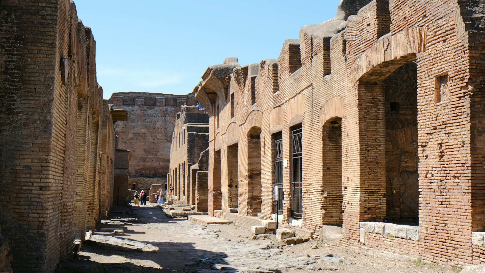
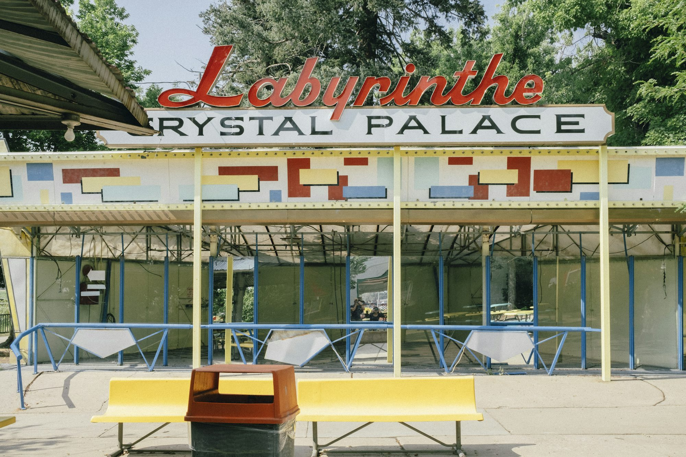
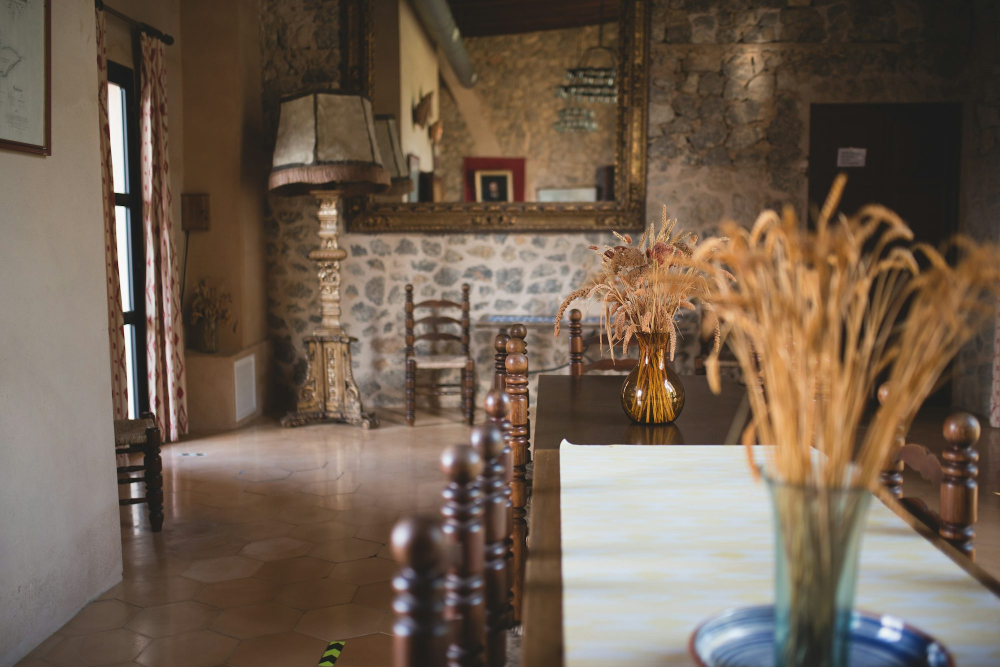

Sustainable Living: Practical Tips for an Eco-Friendly Lifestyle
This article explores sustainable living practices that individuals can adopt to reduce their environmental impact, including practical tips and strategies for a greener lifestyle.Album

Curated reads

Exploring Amusement: A World of Fun and Adventure for Everyone
This article dives into various forms of amusement, showcasing their exciting features and the joy they bring to families and friends.
Emily Thompson
10/21/25


Exploring the Joy of Family-Friendly Entertainment: Top Destinations for Fun
This article explores various family-friendly entertainment destinations, including theme parks, zoos, aquariums, and more, highlighting their unique attractions and the joyful experiences they offer for all ages.
Sophie Henderson
06/22/25